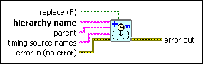

Build Timing Source Hierarchy VI
Owning Palette: Timed Structures and VIs
Requires: Base Development System (Real-Time, Windows)
Creates a hierarchy of timing sources based on the names you enter in timing source names.

 Add to the block diagram Add to the block diagram |
 Find on the palette Find on the palette |